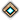
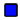

Home
Show

Waypoint
Hearts
Skills
Vistas
POI
Options
Online Options:
Auto-Center

Player Trail
Refresh Rate in ms:
Offline Options:
View Map:
Lion's Arch
Straits of Devastation
Gendarran Fields
Sparkfly Fen
Snowden Drifts
Queensdale
Brisban Wildlands
Kessex Hills
Blazeridge Steppes
Cursed Shore
Caledon Forest
Plains of Ashford
Bloodtide Coast
Fireheart Rise
Frostgorge Sound
Wayfarer Foothills
Southsun Cove
Lornar's Pass
Fields of Ruin
Dredgehaunt Cliffs
Timberline Falls
Metrica Province
Diessa Plateau
Harathi Hinterlands
Mount Maelstrom
Iron Marches
Malchor's Leap
Tower of Nightmares
Download v1.2
Comment
alert('testing');"; echo "
"; } ?>
 Auto-Center Auto-Center
Auto-Center Auto-Center